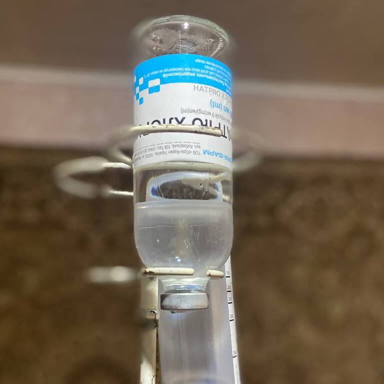

+380(97) 369 76 65
+380(97) 369 76 65Виведення із запою вдома Київ
Виведення із запою за допомогою перевірених крапельниць від алкоголю
Працюємо в Одесі, Києві, Львові, Харкові, Дніпрі, Запоріжжі, Чорноморську, Кам'янському


Безкоштовна консультація, працюємо цілодобово 24/7
Виведення із запою за допомогою перевірених крапельниць від алкоголю
Працюємо в Одесі, Києві, Львові, Харкові, Дніпрі, Запоріжжі, Чорноморську, Кам'янському
Виведення із запою вдома — це комплексна медична допомога, яку у Києві надають лікарі-наркологи медичної служби UmbrellaPlus «Безпечна наркологія». Фахівець приїжджає до пацієнта з усіма необхідними препаратами та проводить процедуру детоксикації за допомогою крапельниці від алкоголю. Цей метод дозволяє швидко та ефективно усунути алкогольну інтоксикацію, перервати запійний стан та пом’якшити прояви абстинентного синдрому. Послуга виведення із запою вдома користується високим попитом завдяки оперативності, анонімності та можливості уникнути госпіталізації до стаціонару. Інфузійна терапія (крапельниця від алкоголю вдома) підбирається індивідуально, що забезпечує безпечне відновлення фізичного та психічного стану пацієнта в комфортних для нього домашніх умовах.
Крапельниця від алкоголю вдома – це медична процедура, спрямована на усунення симптомів гострої алкогольної інтоксикації. Її суть полягає у швидкій детоксикації організму: виведенні токсинів та продуктів напіврозпаду етанолу, які викликають отруєння та погане самопочуття. На відміну від інфузійної терапії при тривалому запої, крапельниця від алкоголю фокусується на:
Такий комплексний підхід дозволяє не тільки швидко нормалізувати стан пацієнта, а й підтримати роботу внутрішніх органів (печінки, нирок, серця), прискоривши повернення до тверезого життя. Процедуру можна провести вдома, що допоможе забезпечити пацієнтові повний спокій.
Склад крапельниці для виведення із запою вдома підбирається індивідуально, враховуючи стан пацієнта, тривалість запою та супутні патології. Основні компоненти включають:
Переваги крапельниці від алкоголю:
Ціна на виведення із запою вдома в Києві починається від 1999грн. Інші послуги наркологічної служби UmbrellaPlus Київ:
| Послуга | Ціна |
|---|---|
| Лікування алкоголізму Київ | Від 1699 грн |
| Виведення із запою Київ | Від 1699 грн |
| Виведення із запою вдома Київ | Від 1999 грн |
| Крапельниця від алкоголю Київ | Від 1699 грн |
| Крапельниця від алкоголю вдома Київ | Від 1999 грн |
| Лікування пивного алкоголізму Київ | Від 1699 грн |
| Лікування жіночого алкоголізму Київ | Від1699 грн |
| Кодування від алкоголізму Київ | Від 4999 грн |
| Кодування від алкоголізму уколом Дисульфірам | Від 4999 грн |
| Кодування від алкоголізму уколом Еспераль | Від 6500 грн |
Крапельниця від алкоголю - екстрене рішення для термінового виведення із запою вдома. Ця процедура швидко очищає кров від токсинів, виводить залишки «шлаків» та відновлює роботу всіх органів та систем. Термінове виведення із запою за допомогою крапельниці від алкоголю необхідне при:
Приїзд лікаря для виведення із запою вдома в Києві здійснюється за 60 хвилин.
Крапельниця від алкоголю не лише усуває фізичні наслідки запою, а й запобігає ускладненням, стабілізуючи стан пацієнта. Плюсом крапельниці від алкоголю є медикаментозне зниження патологічної тяги до спиртних напоїв, що запобігає подальшому похмелінню після терапії.
Анонимно

"Никакими усилиями самостоятельно я не смогла преодолеть запой, и наступала ломка, сопровождаемая повышенным давлением и пульсом. Тогда я решила обратиться за помощью в клинику. Врачи оказали мне неоценимую поддержку! Уже прошел месяц, и я не только не употребляю алкоголь, но даже не испытываю к нему желания!"
Анонимно
"Могу с уверенностью порекомендовать данный центр для тех, кто ищет помощь при выводе из запоя. Я неоднократно обращался к ним и могу сказать, что цена соответствует качеству услуг. После проведения капельницы в клинике, вся тяга к алкоголю проходит, и я чувствую себя гораздо лучше. Это действительно эффективный метод, и я благодарен клинике за их профессионализм и заботу!"
Анонимно
"Я очень благодарен за то, что вы помогли мне разобраться с моей проблемой алкоголизма и найти ее решение. Давно осознавал, что без помощи профессионалов я не справлюсь, и я не ошибся, выбрав ваш центр Амбрелла. Здесь действительно предоставляется профессиональная помощь, которая оказалась для меня реальным спасением. Огромное спасибо за вашу поддержку и заботу!"
Анонимно
"Неоднократно я пытался бросить алкоголь самостоятельно, но каждый раз уговаривал себя продолжать. Я сначала ограничивался одной бутылкой в день, потом двумя, и в итоге вновь попадал в запой. Но в итоге, я смог прекратить употребление алкоголя только после того, как обратился в центр Амбрелла и заказал у них услугу вывода из запоя. Уже не пью 3 месяца и удалось полностью восстановиться. Благодарю врача который меня вел - Алексея Валерьевича"
Анонимно
"Здравствуйте! Я хотел бы выразить свою искреннюю благодарность клинике за быстрое и профессиональное освобождение моего мужа пивного рабства! Ранее у меня уже не было никаких надежд на его выздоровление. Однако, благодаря вашим перспективным методам лечения, мы теперь идем к полному отказу от алкоголя. Вы дали нам новую надежду и оказали неоценимую помощь! Спасибо вам за все!"
Анонимно
"Я долгое время страдал от запоев и не мог справиться с этой проблемой. Однако, когда я обратился в этот центр, они быстро помогли мне вернуться на ноги, и самое главное - предоставили мне возможность не возвращаться к запоям. Уже почти полгода я не испытываю запоев! Это для меня настоящее чудо, я никогда не думал, что смогу так преодолеть свои проблемы. Большое спасибо центру Амбрелла!"
Анонимно
"Благодарю ваш центр Амбрелла за оперативное и высококачественное лечение! Женский алкоголизм - это настоящее горе, с которым невозможно справиться в одиночку. Я уже потеряла надежду, но благодаря вашей помощи, она вернулась ко мне! Отдельная благодарность врачу Станиславу Вячеславовичу, а также благодарность Богу за то, что он послал мне такое чудо как ваша центр! Спасибо вам всем!"
Анонимно
"Хочу выразить благодарность врачу Владиславу Алексеевичу за то, что вы избавили меня от этого ужаса. Я уже был в отчаянии, перепробовал множество клиник и центров, но только здесь я наконец получил настоящую помощь! Алкоголь полностью разрушил меня, и если бы не ваша помощь, я, возможно, уже не был бы жив. С вами я смог вернуть себе жизнь и буду благодарен вам всегда!"
Приїзд протягом 60 хвилин від моменту надходження заявки
Наші філії є у всіх великих містах України.
Ми надаємо професійну доказову медичну допомогу. Гарантією є наше ім'я.
Номер телефону:
+380 (97) 369 76 65
+380 (50) 021 69 57
Адреса головного офісу: м. Харків вул. Сумська 47
Офіс вашого міста
потрібно уточнити
Працюємо у: Одесі, Києві, Львові, Харкові, Дніпрі,
Запоріжжя
Telegram: t.me/umbrellaplus
Графік роботи: Цілодобово